Comenzaremos con el modelo de Lotka-Volterra, que describe la interacción entre dos poblaciones: las presas y los depredadores. Denotaremos por x(t) a la población de presas y por y(t) a la población de depredadores. El sistema está dado por $$\frac{dx}{dt} = \alpha x - \beta xy,$$ $$\frac{dy}{dt} = \delta xy - \gamma y.$$
Los parámetros α, β, γ y δ determinan cómo interactúan ambas poblaciones. En particular, las presas tienden a crecer cuando no hay depredadores, mientras que los depredadores disminuyen cuando la cantidad de presas es insuficiente. La interacción entre ambas poblaciones produce una dinámica en la que los cambios de una población afectan posteriormente a la otra.
Primero analizaremos el campo de direcciones para entender qué ocurre en diferentes regiones del plano de fases. Después utilizaremos distintas condiciones iniciales y modificaremos los parámetros para observar cómo cambia el comportamiento del sistema.
Campo de direcciones
Para comenzar el análisis construimos el campo de direcciones del sistema de Lotka-Volterra en el primer cuadrante, ya que las variables x y y representan poblaciones y, por lo tanto, consideramos valores positivos. En este experimento utilizamos los parámetros α = 1, β = 0.1, γ = 1 y δ = 0.1.
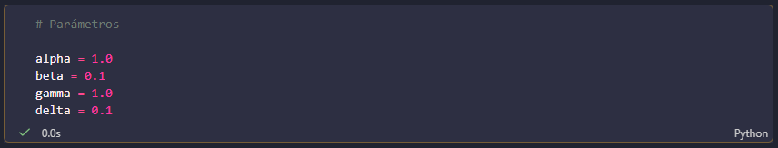
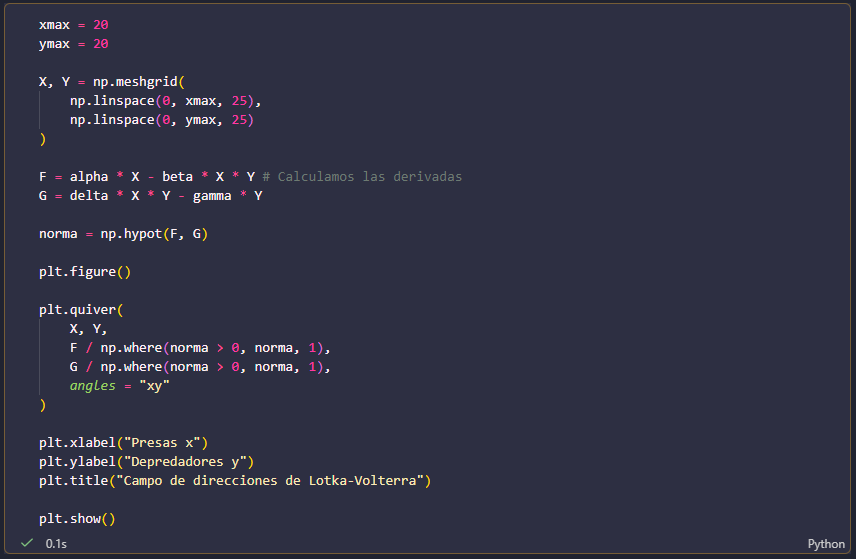
El campo de direcciones nos permite observar hacia dónde se movería una solución si comenzara en cada punto del plano. Las flechas se obtienen a partir de las derivadas dx/dt y dy/dt, por lo que su dirección indica si las poblaciones aumentan o disminuyen. Las flechas fueron normalizadas, de modo que su longitud no representa la rapidez del movimiento, sino únicamente su dirección.
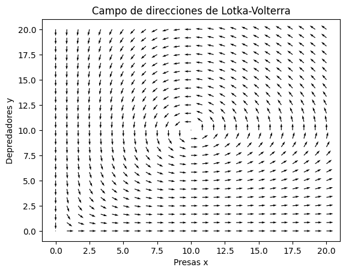
Para determinar las regiones donde aumenta o disminuye cada población, analizamos el signo de las derivadas. Para las presas tenemos $$\frac{dx}{dt} = x(\alpha -\beta y),$$ por lo que, considerando x > 0, las presas aumentan cuando y < α/β y disminuyen cuando y > α/β. En nuestro caso, α/β = 10, por lo que la recta y = 10 separa estas dos regiones.
De manera similar, para los depredadores tenemos $$\frac{dy}{dt} = y(\delta x - \gamma)$$ de modo que los depredadores aumentan cuando x > γ/δ y disminuyen cuando x < γ/δ. Con los parámetros utilizados, γ/δ = 10, por lo que la recta x = 10 marca el cambio entre ambas regiones.
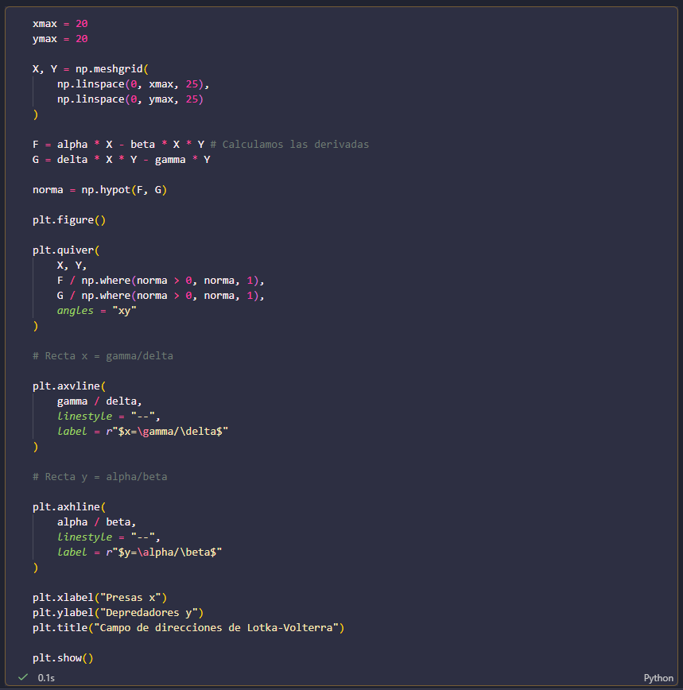
De esta manera, las rectas x = 10 y y = 10 dividen el primer cuadrante en cuatro regiones con comportamientos diferentes. Cuando x < 10 y y < 10, las presas aumentan mientras los depredadores disminuyen. Cuando x > 10 y y < 10, ambas poblaciones aumentan. Cuando x > 10 y y > 10, las presas disminuyen mientras los depredadores aumentan. Finalmente, cuando x < 10 y y > 10, ambas poblaciones disminuyen.
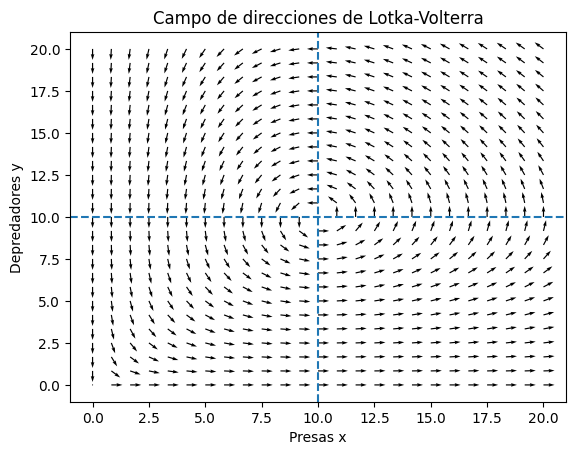
El punto (10,10) es especialmente importante, ya que en él ambas derivadas son cero. Por lo tanto, representa un punto de equilibrio del sistema. Al observar el campo de direcciones alrededor de este punto se aprecia que las flechas cambian de dirección de una región a otra, formando un patrón que sugiere un movimiento alrededor del equilibrio. En las siguientes actividades veremos cómo se comportan las soluciones concretas y cómo este patrón se relaciona con la evolución temporal de las poblaciones.
Efecto de las condiciones inciales
En esta actividad mantuvimos fijos los parámetros del modelo y modificamos únicamente las condiciones iniciales. De esta manera podemos observar cómo cambia la evolución de las poblaciones dependiendo de la cantidad de presas y depredadores que existen al inicio de la simulación. Para cada condición inicial resolvimos el sistema durante un intervalo de tiempo de \(T=30\) y utilizamos el método RK45 para obtener una aproximación numérica de las soluciones.
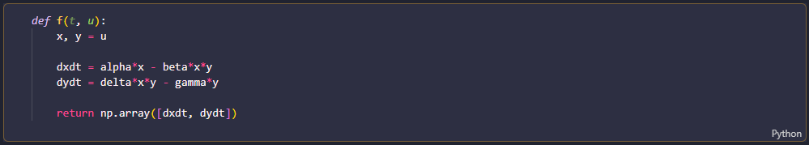
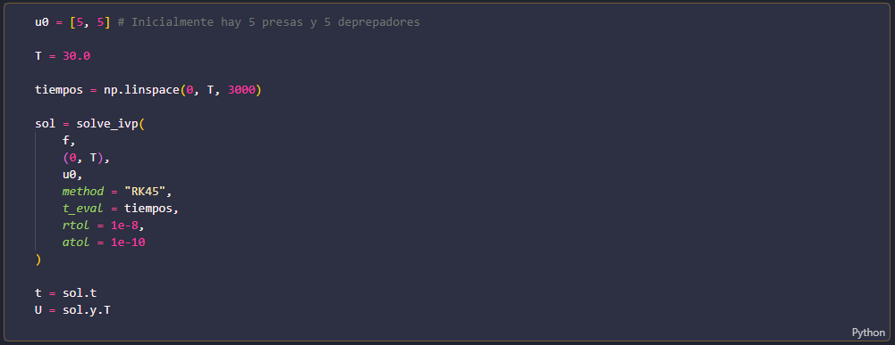
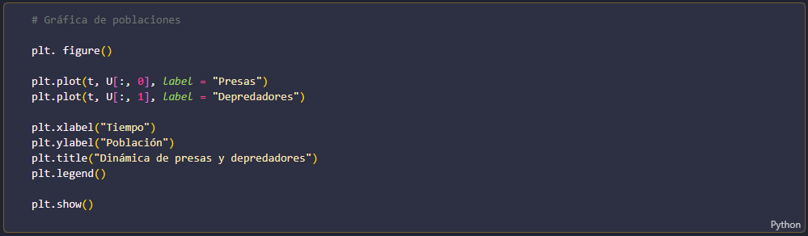
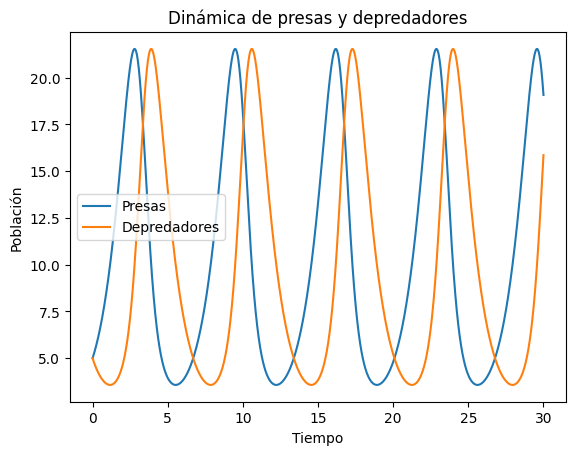
En las gráficas temporales observamos que las poblaciones presentan variaciones sucesivas a lo largo del tiempo. Cuando aumenta la cantidad de presas, existe una mayor disponibilidad de alimento para los depredadores, por lo que posteriormente la población de depredadores también aumenta. Sin embargo, el incremento de depredadores produce una disminución en la cantidad de presas. Al haber menos presas disponibles, la población de depredadores comienza después a disminuir, permitiendo que las presas vuelvan a recuperarse.
Este comportamiento genera un ciclo de crecimiento y disminución de ambas poblaciones. Además, los máximos de las dos poblaciones no ocurren exactamente al mismo tiempo. Primero aumenta la población de presas y, después de un cierto tiempo, responde la población de depredadores. Este desfase se debe a que el crecimiento de los depredadores depende de la disponibilidad de presas.
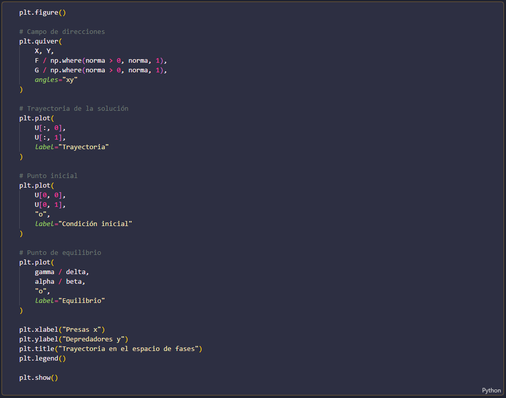
Para complementar las gráficas temporales, representamos la solución en el espacio de fases \((x,y)\). En esta representación cada punto indica simultáneamente la cantidad de presas y de depredadores, mientras que la curva muestra cómo cambia el estado del sistema con el tiempo.
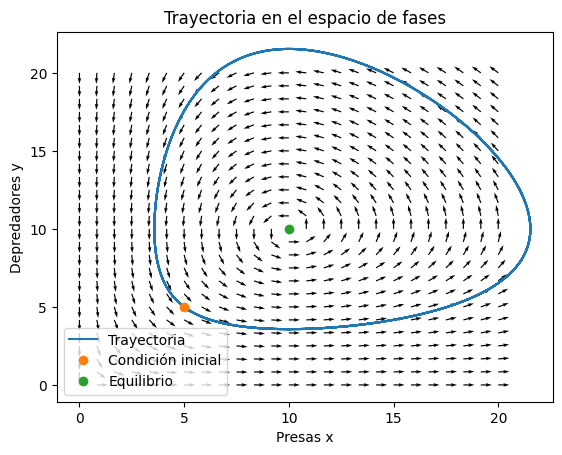
Al superponer la trayectoria sobre el campo de direcciones podemos seguir el movimiento del sistema y comprobar que la trayectoria es coherente con las direcciones determinadas por las derivadas. Por ejemplo, cuando hay pocas presas y pocos depredadores, las presas tienden a aumentar mientras los depredadores disminuyen. Al desplazarnos hacia una región con más presas, los depredadores comienzan a aumentar; posteriormente, cuando la cantidad de depredadores es suficientemente grande, las presas empiezan a disminuir.
De esta manera, el espacio de fases permite visualizar en una sola gráfica la interacción entre ambas poblaciones. La trayectoria muestra que el estado del sistema va pasando de una región a otra del campo de direcciones, relacionando directamente el comportamiento observado en las gráficas temporales con la dinámica de las dos poblaciones.
Distintas condiciones iniciales
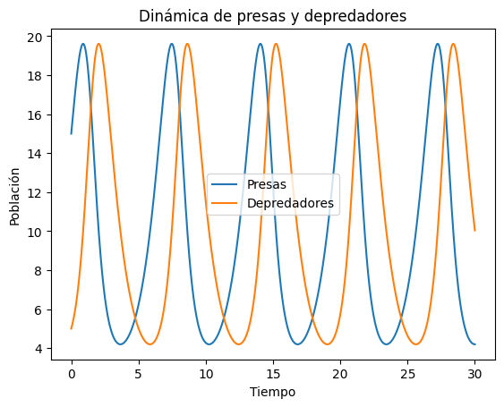
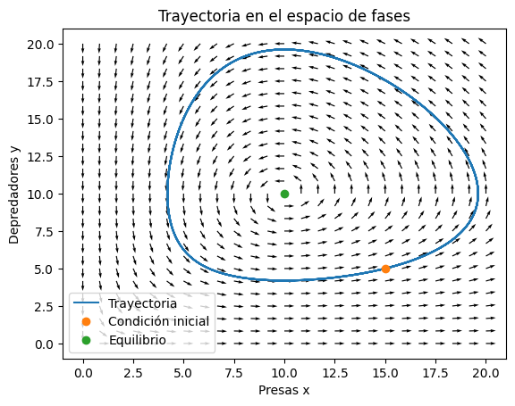
En este caso comenzamos con una población relativamente grande de presas y una población pequeña de depredadores, con \((x_0,y_0)=(15,5)\). Al haber pocas amenazas, las presas inicialmente tienden a aumentar, mientras que los depredadores se benefician posteriormente de la disponibilidad de alimento. Esto permite observar cómo el crecimiento de una población influye en la evolución de la otra y cómo el sistema se desplaza por diferentes regiones del espacio de fases.
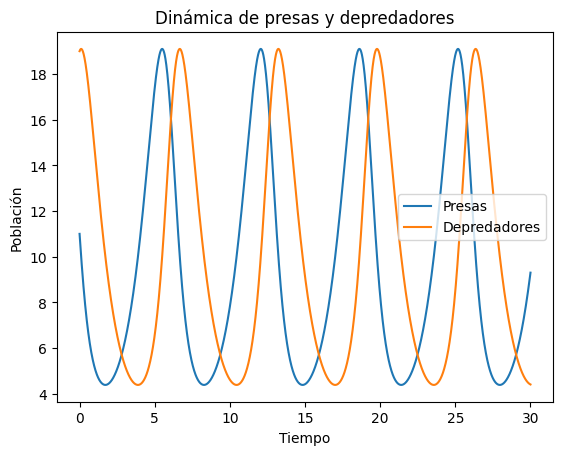
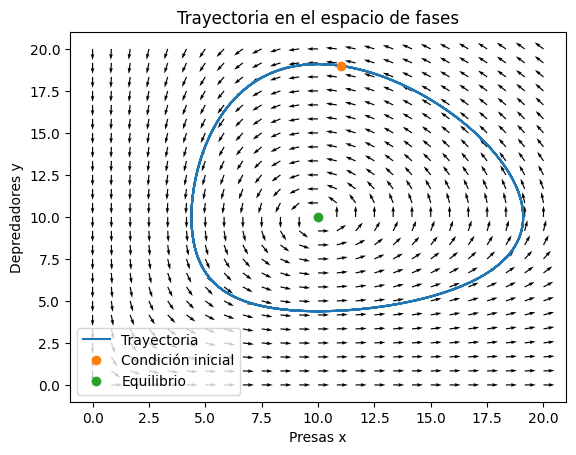
Para esta simulación iniciamos con pocas presas y una cantidad relativamente grande de depredadores, \((x_0,y_0)=(5,15)\). La presencia de muchos depredadores provoca inicialmente una disminución de las presas. Al reducirse la disponibilidad de alimento, los depredadores también comienzan posteriormente a disminuir. Esto muestra cómo una condición inicial diferente modifica la evolución temporal de las poblaciones, aunque los parámetros de interacción del modelo permanezcan constantes.
Distintos parametros
Para estudiar el efecto de \(\alpha\), aumentamos su valor de \(1.0\) a \(1.5\), manteniendo constantes los demás parámetros y las condiciones iniciales. Este parámetro representa la tasa de crecimiento de las presas en ausencia de depredadores.
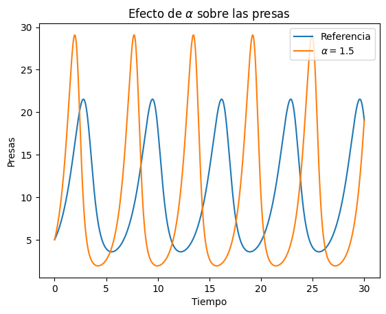
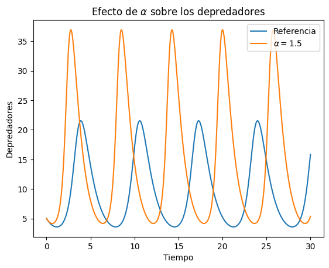
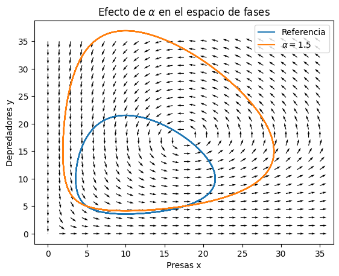
Al aumentar \(\alpha\), las presas tienen una mayor capacidad de crecimiento, especialmente cuando la población de depredadores es pequeña. Esto modifica posteriormente la disponibilidad de alimento para los depredadores y, por lo tanto, afecta la evolución de ambas poblaciones. Al comparar la solución con el caso de referencia podemos observar cómo un cambio en la tasa de crecimiento de las presas modifica la dinámica del sistema.
Para estudiar el efecto de \(\beta\), aumentamos su valor de \(0.1\) a \(0.2\), manteniendo constantes los demás parámetros y las condiciones iniciales. Este parámetro determina el efecto de la interacción con los depredadores sobre la población de presas.
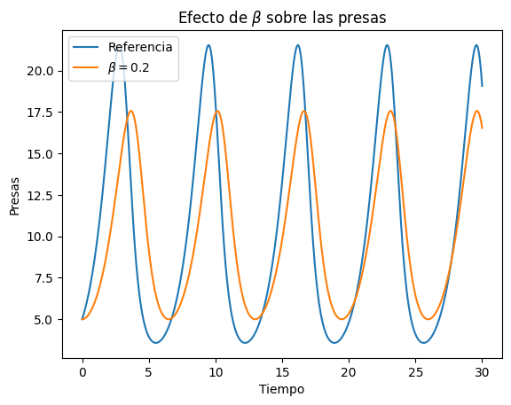
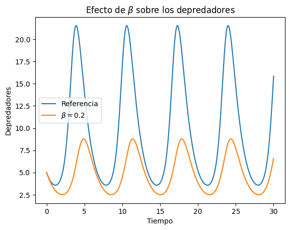
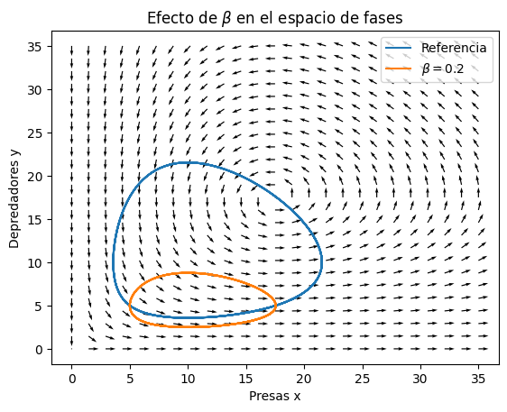
Al aumentar \(beta\), la interacción entre presas y depredadores produce una mayor pérdida de presas. Por ello, esperamos observar una disminución más pronunciada de la población de presas en los momentos en que hay una cantidad importante de depredadores. Este cambio también modifica la evolución posterior de los depredadores, ya que su crecimiento depende de la disponibilidad de presas.
En este experimento modificamos \(\gamma\), aumentando su valor de \(1.0\) a \(1.5\), mientras mantenemos constantes los demás parámetros y las condiciones iniciales. Este parámetro representa la tasa de mortalidad de los depredadores cuando no hay presas.
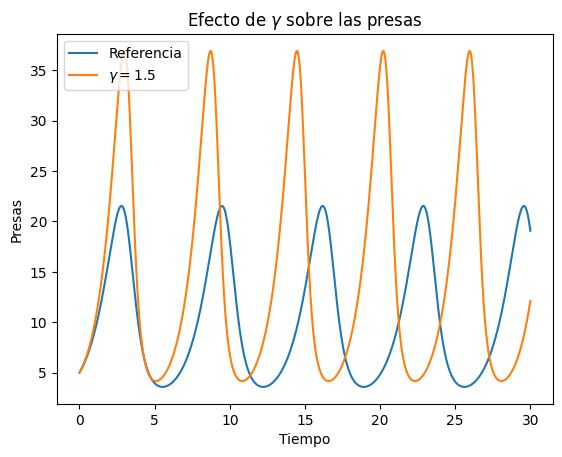
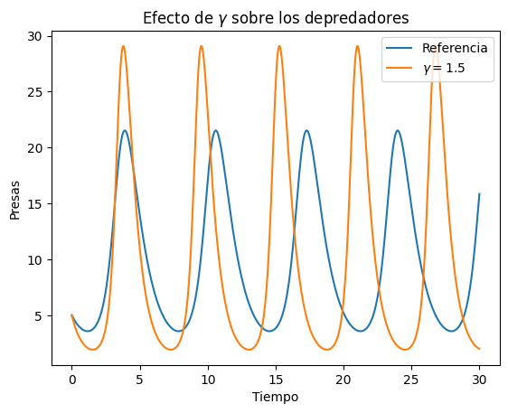
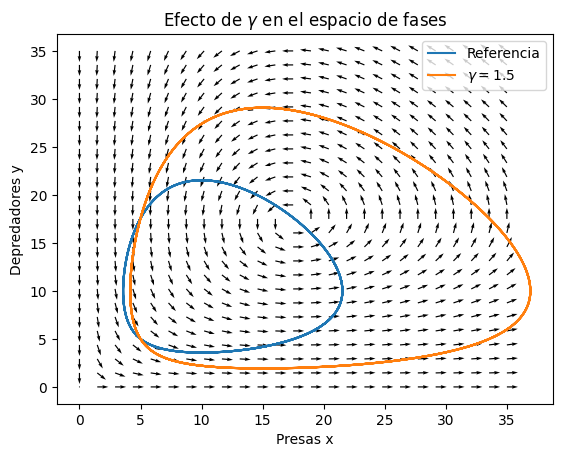
Al aumentar \(\gamma\), los depredadores tienden a disminuir más rápidamente cuando la cantidad de presas es pequeña. Como consecuencia, la interacción entre ambas poblaciones cambia y esto repercute también en la evolución de las presas. La comparación con el caso de referencia permite observar cómo un cambio en la mortalidad de los depredadores modifica la dinámica de todo el sistema.
Finalmente, modificamos el parámetro \(\delta\), aumentando su valor de \(0.1\) a \(0.2\). Los demás parámetros y las condiciones iniciales se mantienen iguales. Este parámetro determina el crecimiento de los depredadores asociado con la disponibilidad de presas.

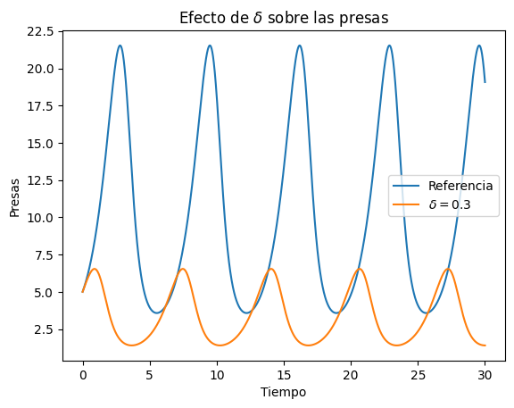
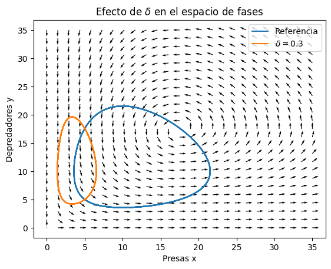
Al aumentar \(\delta\), la población de depredadores responde con mayor intensidad a la presencia de presas. Por lo tanto, cuando existe una cantidad suficiente de alimento, los depredadores pueden aumentar más rápidamente que en el caso de referencia. Este cambio modifica a su vez la población de presas y altera la trayectoria que sigue el sistema en el espacio de fases.